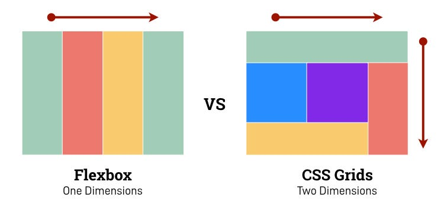

CSS = Cascading Style Sheets
What can CSS do?
- text appearance: font, color, size, style, alignment, …
- general layout: arrange elements, visual organisation, …
- interaction design: hover effects, animations, …
Syntax
CSS is a rule-based language: you define the rules by specifying groups of styles that should be applied to particular elements.
One rule consists of selector and declaration block:
selector { /* <- e.g. class name */
property: value; /* <- declaration */
}
Positioning
The position property determines where the element is rendered:
- static: default, rendered in page flow
- relative: can be offset from its parent, original space will remain occupied
- absolute: removes element from the page flow, allows positioning in relation to the closest parent not static
- fixed: like absolute but in relation to the window
- sticky: hybrid of relative and fixed
Custom Properties
Also known as CSS Variables these allow to easily reuse values:
:root {
--primary-color: yellow; /* declare it, prefixed with double dash */
}
p {
color: var(--primary-color); /* access value with var() */
}
Helpful resources
- All of that and much more with explanations and examples can be found in this excellent CSS Handbook from 2019
- CSS Section on the Mozilla Developer Network
- Can I use? to check browser support of any CSS feature
Document Object Model
The DOM connects the HTML with JavaScript through an in-memory representation.
It represents the document with a logical tree.
DOM Tree

Inline styles
We can use the style attribute to define styles for our HTML elements, using the following syntax:
Inline styles example
Paragraph text in red.
Paragraph text in red.
The class attribute
We write a meaningful name into the class attribute:
Paragraph text in red.
Then we can reference this class in CSS prefixed with a dot:
Classes
Elements can have multiple classes, which applies multiple rules:
Paragraph text in red.
Class vs. Inline
Why use classes instead of inline styles?
- Inline styles are hard to override/adjust
- We can easily reuse styles
- Separates the concerns of styling and structure
- Easier to read and maintain
- Inline styles are less performant
Selectors
Classes aren't our only way to target elements. We can use different identifiers from our HTML as selector:
- Tags: div, input, h1…
- Classes: .red, .primary-button, …
- IDs: #title, #submit
Multiple Selectors
We can list multiple selectors separated with comma to apply the same rule to different elements:
p, li {
color: red;
}
Combinator Selectors
Some elements should look different based on where they are.
li span { /* spans that are descendants of a li */
color: red;
}
li > span { /* spans that are direct children of a li */
color: red;
}
li + p { /* p that is an adjacent sibling of a li */
color: red;
}
Combined Selectors
We can combine selectors to target more specific elements:
div.banner li#upload > buttonh2 + ul libody section p + pCSS Reset
We usually want to ensure a consistent UI across browsers without having to constantly overwrite default styles. We can …
- … manually set the most important rules
- … use a pre-made «Reset CSS» file to fully strip all styles
- … use Normalize.css which ensures consistent default styles without resetting everything
- … use Sanitize.css which take an opinionated approach to include developer preferences (such as border-box)
It's boxes all the way down
- Every HTML element is represented as a rectangular box.
- CSS determines the size, position, and other properties (e.g. color) of these boxes.
- Each box is divided into 4 areas.
What's in the box?
Content: The actual content of the box, in which text, images and other child elements appear. Child elements are bound by this area.
Padding: Clears an area around the content, separating content and border. The padding is transparent.
Border: A border that goes around the padding and content. Backgrounds extend to the edge of this area/box. The border can be colored.
Margin: Clears an area outside the border to separate the element from its neighbors. The margin is transparent.
Margin Collapsing
Vertical margins (top and bottom) of blocks are collapsed in 3 cases.
1. Adjacent siblings
2. Nothing separating parent & descendants
When there's no border, padding or content between outer and inner margin.
3. Empty blocks
Top and bottom margin collapses on blocks with zero height and no border or padding.
Margin Collapsing
How can we avoid collapsing issues?
- Use margins in only one direction, e.g. only bottom and right margins
- Generally don't overuse margins, many problems can be solved with padding
Margin vs. Padding
When should I use which one?
-
Use margin for spacing between neighbouring elements
control whitespace -
Use padding to position child elements and text content
control box - Note: padding is included in the background colour/image and click region (e.g. for links or buttons)
- Margin can be set to auto or negative numbers
A little mnemonic

Layout systems
Flex Box
- single-directional
- main axis and cross axis
- flexible item sizes with rules for growing and shrinking
- good for responsive layout that wraps
- usually good fit for isolated elements
- often gets nested
Grid
- two-dimensional layouts
- rows and columns
- explicit and implicit grids
- good for aligning horizontal and vertical elements
- usually good fit for page layouts
- only on one hierarchy level (changes in future)
Flex vs. Grid
Source
Most of the slides are from our «CSS for Developers» course.
The full set of slides is available on GitHub.